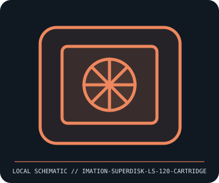

[ REMOVABLE MEDIA // INDIVIDUAL RECORD ]
Imation SuperDisk LS-120 Cartridge
LS-120 / SuperDisk 120 MB removable medium, introduced in the mid-1990s. This entry describes the identified medium or reader, not a bundled drive/media pair; exact capacity and compatibility are model- and host-dependent.

IDENTIFICATION: Record the full label, manufacturer part number, revision/date code, format markings, and packaging. Product-family names alone do not identify capacity generation or supported drive.
Format and compatibility
| Catalog subcategory | Magnetic removable cartridges |
|---|---|
| Catalog identity | Imation SuperDisk LS-120 Cartridge |
| Format / era | LS-120 / SuperDisk 120 MB removable medium, introduced in the mid-1990s |
| Media/device distinction | This record is the removable medium only; the compatible drive is separate and not included. |
| Capacity / interface | 120 MB nominal capacity (roughly 120 million bytes) on a 3.5-inch cartridge using laser-servo tracking and magnetic recording; the cartridge itself contains no drive electronics. |
| Compatibility | Requires an LS-120-capable SuperDisk drive; ordinary 3.5-inch floppy drives cannot read or write LS-120 media. LS-120 drives commonly support standard 1.44 MB diskettes, but verify the exact drive model and interface/driver. |
| Variant caveat | “SuperDisk”/LS-120 identifies a media-and-drive generation, not an ordinary floppy disk. Later LS-240 media and drives are not identical; LS-240 drives have media-specific compatibility and must not be assumed from the 120 label. |
Media care and preservation
Keep the protective shutter intact and avoid dirt, scratches, moisture, strong magnetic fields, and heat. Store in its case at stable temperature. Do not force a cartridge into a drive; preserve any surviving data by read-only imaging and checksum verification.
- Preserve original packaging, labels, and acquisition/context notes; photograph both sides and record any write-protect state before use.
- Keep valuable contents in at least two independently verified copies on separate storage. Record a checksum and test a restore; removable media alone is not a preservation plan.
Model and version caveats
“SuperDisk”/LS-120 identifies a media-and-drive generation, not an ordinary floppy disk. Later LS-240 media and drives are not identical; LS-240 drives have media-specific compatibility and must not be assumed from the 120 label.
Compatibility statements are limited to the named format/model and published host support. Check manufacturer manual, firmware, regional SKU, and media generation before inserting or writing. A similar connector or cartridge shell is not proof of compatibility.
Sources & further reading
- Imation — SuperDisk product and support archiveManufacturer reference for SuperDisk media; archived packaging/manuals are needed to identify exact regional LS-120 variants.
- PC Guide — SuperDisk / LS-120 referenceTechnical overview of LS-120 capacity, servo tracking, and standard-floppy compatibility; drive manual governs model-specific behavior.
Sources identify the relevant standard, manufacturer, or product family. Where an archived SKU-specific datasheet is unavailable, the exact label/manual and supported host list take precedence over family-level marketing claims.